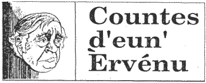

'J'cmenche a perdre la veue,' s'fit le buoan'houmme Ph'lip de Caudeville à sa buoannefemme, 'i' s'en va faller que j'aille à la Fountaine ès Mittes ramasser d'ieau pour me bangni l'siers.'
Car dans l'vier temps s'nous avait ma ès iers ou la veue faillie nou'n'allait pas en ville counsulter eun specialiste qui vos cherge chinquante louis pour vos sou'atter l'Bounjour, nou' prenait eune jougue à cidre et d'scendait à la Fountaine ès Mittes la remplyi d'ieau pour se laver l's'iers.
Mais la buoannefemme Méré de Caudeville counaissait son buon'houmme. 'Ne m'racounte pas ditelles histouaithes,' ou's'fit, 'ch'n'est pas à la Fountaine ès Mittes que tu t'envas, car n'y'a pas d'auberge là-bas. Tu t'envas au pid d'l'égise et quand tu r'veindras t'éthas en effet la veue faillie et tu clyeinteras nardi, car tu s'ras caud d'bèthe.'
Eh bein, le buoan'houmme Ph'lip en avais ieu assez, d'être tréjous picangnyi par sa buoannefemme: il en avait si plien les braies qu'i' s'en fut s'souasladgi à l'auberge. Et en r'venant i' clyeintait hardi et avait d'la peine à s'trainer, tant i' craulait. Mais, viyous, chest ch'la qui s'arrive ès hoummes quand lus buoannefemme les picangnye à loungeur de jour. Quand i' r'arrivit siez li la buoannefemme Méré 'tait dêjà au liet et ou n'l'entendit pas entrer. Et d'même le Ph'lip entre dans s'n' apotie, trouve eune jougue à cidre, et le v'la hors à la Fountaine es Mittes cherchi d'ieau. Le c'min le loung du Cré qui mêne à la fountaine 'tait hardi rude - y'avait des trouncs d'geon partout - et i' tchulbutit pusieurs fais en d'scendant.
Tout près d'la fountaine y'a un hardi sale creux, Le Rouoge Creux coumme nou' l'appelle. Il est au mains chinquante pids d'profound et les côtés sount à pic. Et l'Ph'lip de Caudeville, qui 'tait si caud d'bèthe qu'i'n'savait pas tchiqu'i' faisait, se traine parmi la feugiethe et apprêche trop prè du creux, choppe et tchait d'dans. s'il avait 'té sobre i' se s'rait tué, mais, bah, les siens qu'ount but eune fais d'trop i' peuvent sé capuchi sans s'faithe dé ma.
Tout buoun, mais coumment s'en dêhaller? Coumme j'vos disais, les côtés du creux 'taient à pic, et l'houmme le pus leste et l'pus sobre n'éthait jamais peu les grimper, et l'Ph'lip de Caudeville én 'tait ni leste ni sobre. I' s'mînt à faithe des heurles, mais beins eux n'y'avait persounne par les c'mîns pour l'entendre.
Quand la Méré de Caudeville se révillit le lound'main et qu'ou vit que l'Ph'lip én 'tait pas la ou' s'en fut trouver l'Chentnyi, le grand Jean Gibaut d'en Egypte. I counnaissait le Ph'lip de Caudeville de vieille main et d'même i' rassemblyi les Officiers de Counnétablye et lus dit d'aller batt' les ruettes entre l'auberge et les Pliatouns, ouesqu'i' trouv'raient le Ph'lip êtravlé, endormi countre tchique fossé. Mais i' passitent toute la matinée a batt' les ruettes et n'le trouvitent pas. Et d'même i' r'rentrent tous siez sé dîner et faithe lus tripot d'bêtes, et l'arlevée 'tait dêjà bein avanchie quand i' s'en r'futent en Egypte dithe au Chentnyi qu'i' n'avaient trouvé ni pé ni carcasse du Ph'lip.
'Mais', s'fit le grand Jean Gibaut, 'iou den dgablye qu'i' peut aver disparu? Y'a acquo eune pliaiche que j'n'avouns pas cherchi. I dit qu'il a la veue faillie et i' va d'temps en temps à la Fountaine es Mittes cherchi d'ieau. Allez là-bas, mes garçouns, i' pourrait et' endormi là. Et d'même le v'la les Officers de Counnétablye qui d'scendent à la fountaine. Tout alentou' la feugiethe 'tait foualiée et el' ententitent ches heurles dêhaller du Rouge Creux. I savaient bein que ch'tait l'Ph'lip et que puisse qu'i' heurlait si bein i' n'avait pas souffert grand ma. Mais i' c'menchait à faithe niet et i' savaient bein qu'i' s'n'allaient pas pouver l'dêhaller chu jour-là. Et d'même i' s'avisitent de n'rein lis dithe et i' s'en r'futent racounter l'affaithe au chentnyi. 'Mercie, mes garçouns,' s'fit l'grand Jean Gibaut, achteu j'sais coumment m'ramasser'. Et le v'là hors à travers les Pliatouns siez Méré d'Caudeville lis dithe que l'Ph'lip avait 'té trouvé, mais qu'i; 'tait au bas du Rouoge Creux et qu'i' s'n'allait prendre à la police au mains deux jours pour le dêhaller.
'V'la tchi veur dithe, Méré, que pour acquo trais niets tu t'en vas aver a couochi toute seule et qu'tu n'éthas pas l'Ph'lip a t'cauffer l'liet. Mais vais tu, tu l'picangnye tant que p'téte il aime mus rester au found du Rouoge Creux que d'érvener siez té. Demain au matin j'm'en vais là-bas lis d'mander.'
La pouare Méré 'tait en lèrmes. 'Chentnyi, ou s'fit, s'ou pouvais le déhaller du Rouoge Creux et r'amner ichein j'vos guarantie que j'soignerait d'li coumme i' faut, sans jamais l'picagnyi.'
Au prs du Rouoge Creux y'avait eune cranne, de tchi qu'les fermiers sé servaient pour ramasser du vraic. I' mênagitent à pliaitchi la cranne au d'sus du Rouoge Creux, eun janne Offici' d'Counnétablye d'scendit sus eune corde et réussit, à la passer alentou d'Ph'lip de Caudeville, qui par chu temps-là 'tait presqu'sans counnaissance, et i' l'ramountîtent.
Dépis chu jour-là, la veue au Ph'lip ramodit hardi et la buoannefemme Méré se coumportit. Le grand Jean Gibaut ch'esit eune vrai buoan chentnyi, qu'i savait s'ramasser.
Lé Vièr Trin'tais
JEP 2/7/1993
Viyiz étout: